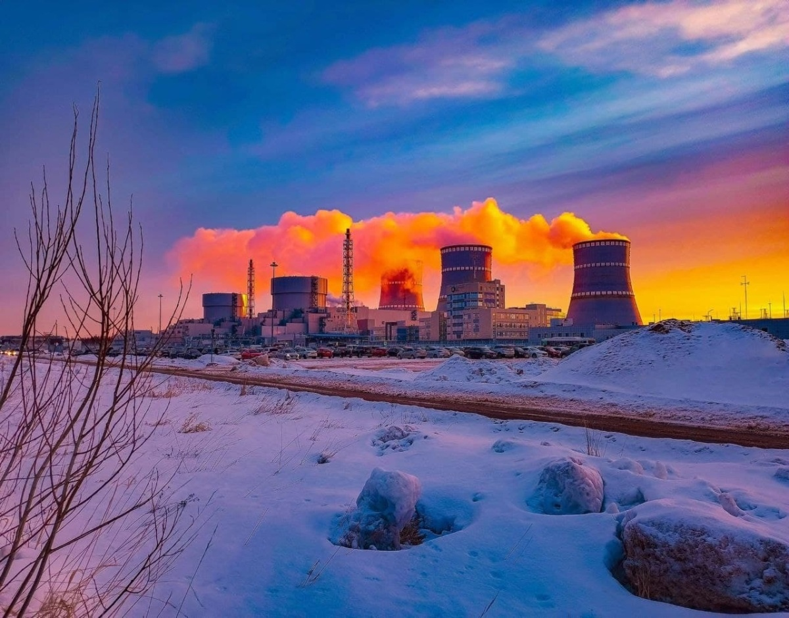

Пятый энергоблок ВВЭР-1200 Ленинградской АЭС подключен к сети после 44-дневного планового ремонта

24 февраля 2022 года в 10.01 мск энергоблок № 5 ВВЭР-1200 Ленинградской АЭС подключен к единой энергосистеме России после завершения планового среднего ремонта. Специалисты вывели его на 100% мощности 25 февраля в 15.00 мск.
Ремонтная кампания на 5 блоке, введенном в промышленную эксплуатацию в марте 2018 года, продлилась в соответствии с графиком 44 суток.
За это время специалисты выполнили ревизию, техническое обслуживание и ремонт реакторного и турбинного оборудования, генератора, систем безопасности, переставили в реакторе тепловыделяющие сборки с ядерным топливом, заменив при этом часть отработавших кассет на свежие.
Также они протестировали герметичную оболочку здания реактора и подтвердили ее целостность и прочность. В настоящее время на Ленинградской АЭС находятся в работе энергоблоки №3 и №4 РБМК-1000 и энергоблоки №5 и №6 ВВЭР-1200. Они несут нагрузку 4400 МВт.